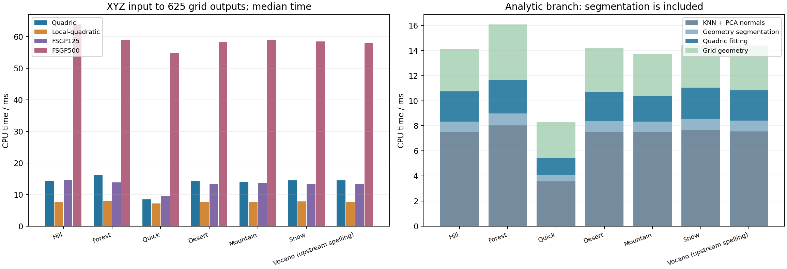
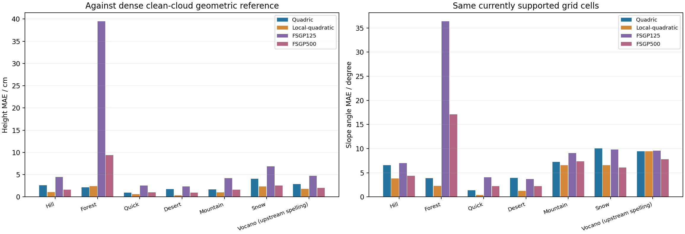
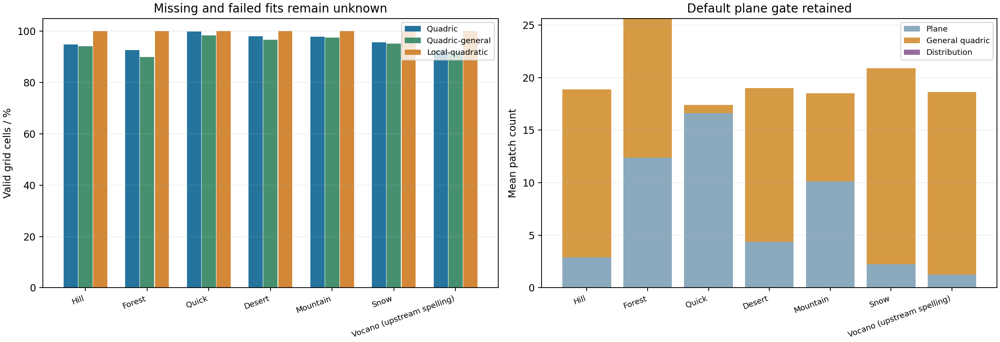
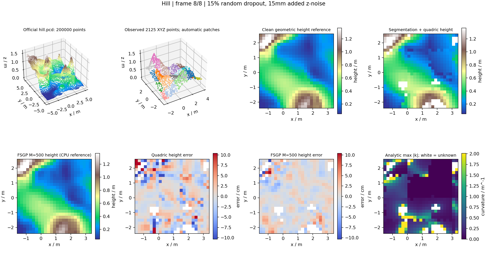
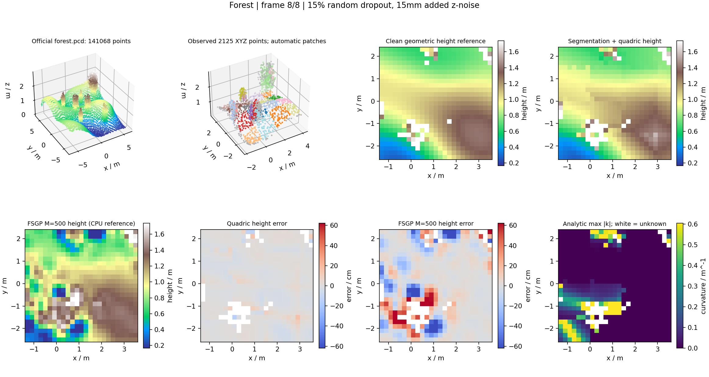
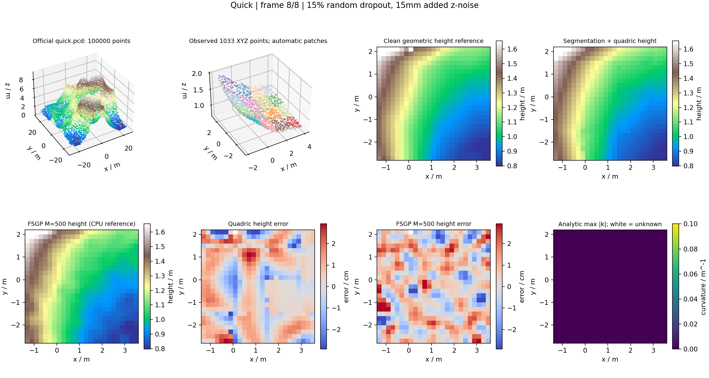
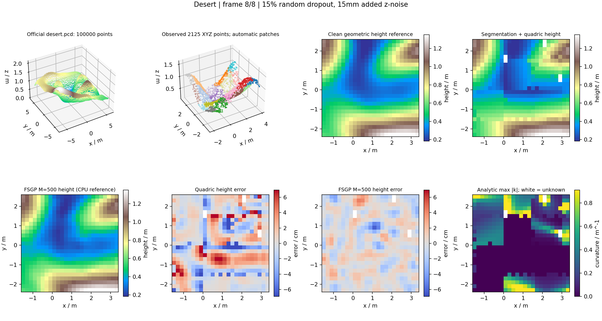
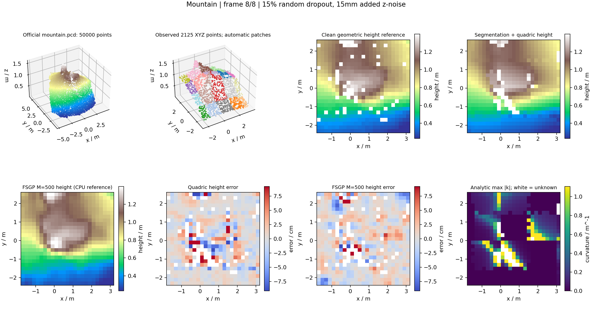
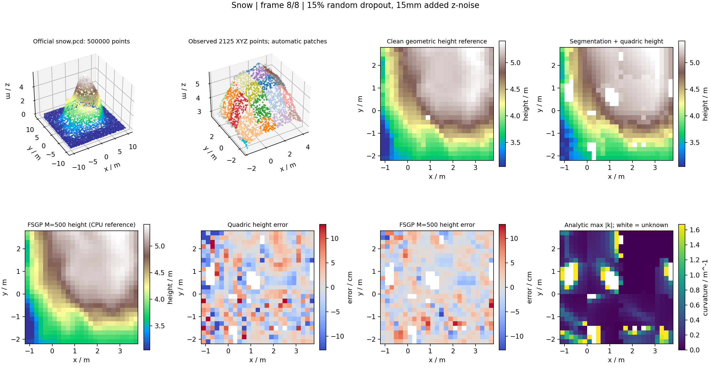
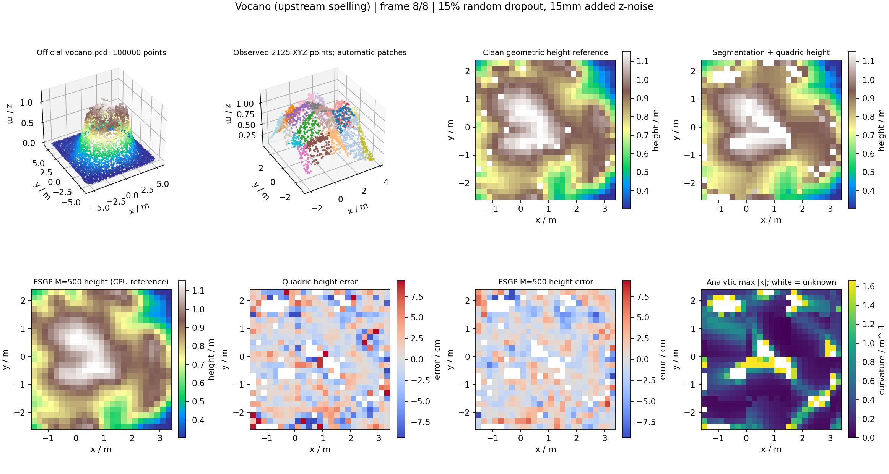

作者公开地形点云：从分割开始的完整拟合测试
已确认论文为高飞参与的 FSGP-BGK（IROS 2025）。本实验使用官方仓库原始点云，未用理想球面替代地形。
主要结果：计入法向和分割后，本地解析方案在七个场景都慢于局部高度二次拟合，与FSGP125 CPU参考接近。
它相对几何参考的曲率差异也普遍更大，先前理想面片上的速度与精度优势没有延续到这条完整地形流水线。
解析分支完整流程：输入XYZ → 裁剪局部窗口 → KNN/PCA法向 → 空间与法向约束的自动分割 → Taubin拟合 → 栅格高度/法向/坡度/主曲率。
FSGP原方法直接提取局部特征并做GP回归，不需要先做这种二次曲面面片分割。
数据范围与计时口径
上游固定提交：6e5976957734b90f367f8460a6eea6a0fc18c1cc。七份原始点云均检查Git blob SHA1、文件大小和SHA256。
仓库包含丘陵、森林以及quick、沙漠、山地、雪地、火山示例。这些示例不等于论文完整2500组评测；
公路、室内和废墟原始批测集与通行代价标签没有包含在该仓库发布中，本次没有伪造这些缺失实验。
每个场景8个移动窗口；5×5m地图、0.2m栅格，共625个查询位置。局部观测先以0.06m保留代表点，最多2500点，
然后随机丢弃15%、增加15mm高程噪声。后者是沿用的本地诊断噪声，不是论文已声明参数；随机丢点不是射线遮挡仿真。
单线程CPU，每种方法预热1次后交错重复7次计时；包含输入处理、法向、分割、拟合和地图计算，不含PCD读盘、参考生成与绘图。
FSGP125/500为本地CPU公式参考，另含不确定性与代价输出；没有运行作者GPU程序，也没有在此实验加入BGK时序融合。
局部二次对照使用64个3D近邻，直接拟合重力对齐的高度函数z=f(x,y)，不预分割；
它与前一轮任意切平面坐标下的局部多项式基线实现不同，本轮所有方法均固定625个地图查询。
从XYZ开始的速度
所有方法读取完全相同的局部观测并查询同样625个栅格。统计是逐帧中位数再取中位数；各阶段不含参考计算。

效果与覆盖率
参照来自完整干净点云的局部几何：六个文件附带单位法向，森林文件没有法向，使用完整干净点云估计PCA法向。
高度由近邻切平面给出，几何曲率由干净法向变化局部拟合得到。因此这里是几何参考差异，不能称为论文代价真值误差。
主对照在参考与四种方法共同有效的当前栅格上评估，丢失/拟合失败位置保留未知；每种方法的完整覆盖率另列。
FSGP的无量纲PCA曲率指标没有与单位m⁻¹的主曲率直接比较。


默认平面阈值会让部分缓弯面输出零曲率。Quadric-general为关闭平面门限的单独敏感性对照，
其原始误差、失败比例和逐次耗时保留在CSV/JSON中；它采用自己的参考交集，不能与主表直接作精度排名。
完整原始PCD输入：不设点数上限
下面从原始PCD的全部XYZ在内存中开始，计时内先裁剪局部窗口；不做0.06m稀疏化、2500点上限、随机丢点或额外噪声。
局部二次方法和FSGP也包含各自所需的在线裁剪和建树。输入全图点数与实际局部点数分开列出。
场景效果
每幅图先显示原始地图与带噪观测的自动分割，再显示相同窗口的地图结果。灰色点没有形成有效面片，白格为未知。
高度色标使用1–99百分位、误差色标使用98百分位、曲率色标使用95百分位；超出色标的数值截断，CSV/NPZ保留完整数值。







复查与来源
17项单元测试覆盖曲率闭式公式、有限差分、刚体变换、上下层分割、根选择与完整平面流水线。
每帧NPZ包含原始局部输入、源点索引、分割标签、参考与各方法预测，可重新计算误差；protocol.json记录全部参数与源码哈希。
本次是二次曲面方案在高飞团队公开地形上的独立测试，不能称为论文原版GPU性能复现或完整2500场景复现。
论文：https://arxiv.org/html/2503.04134v2 。官方仓库：https://github.com/ZJU-FAST-Lab/FSGP_BGK 。